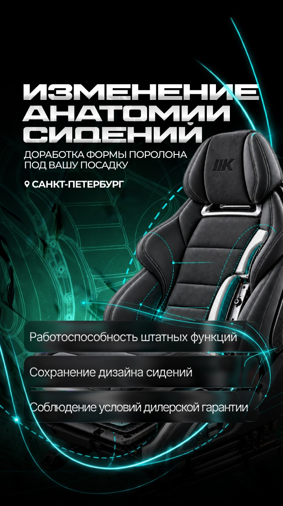
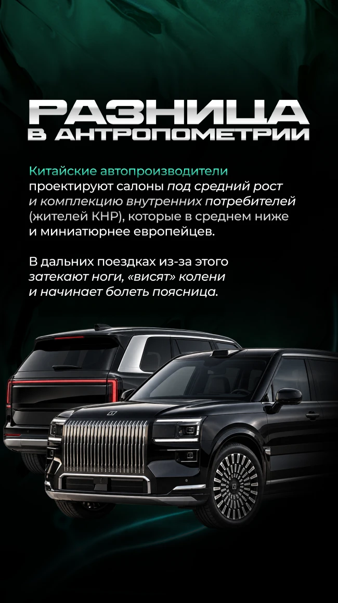
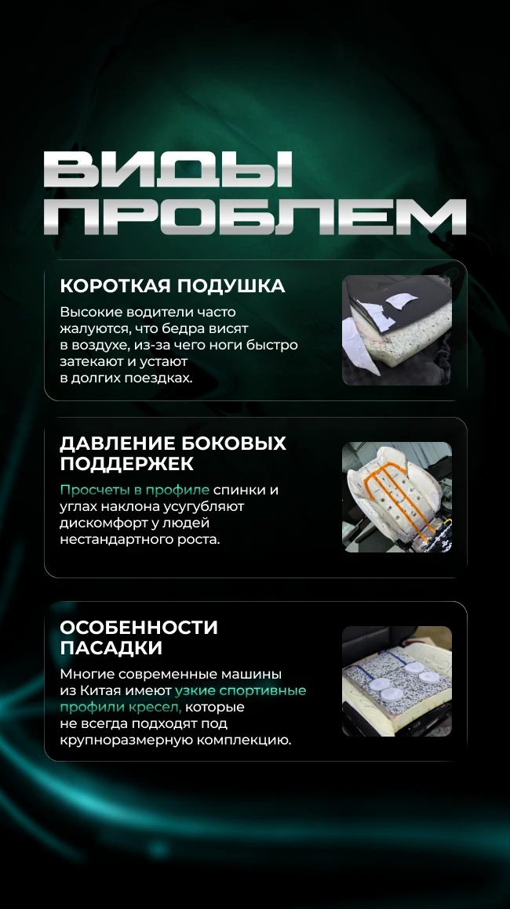
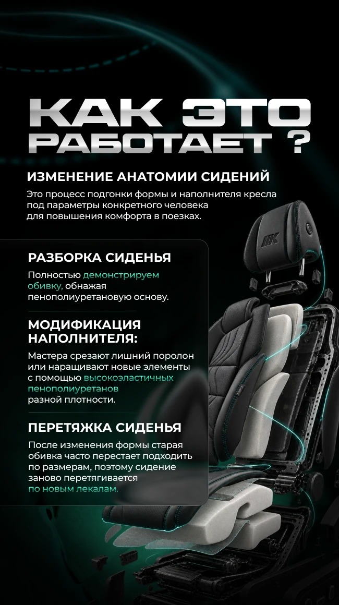
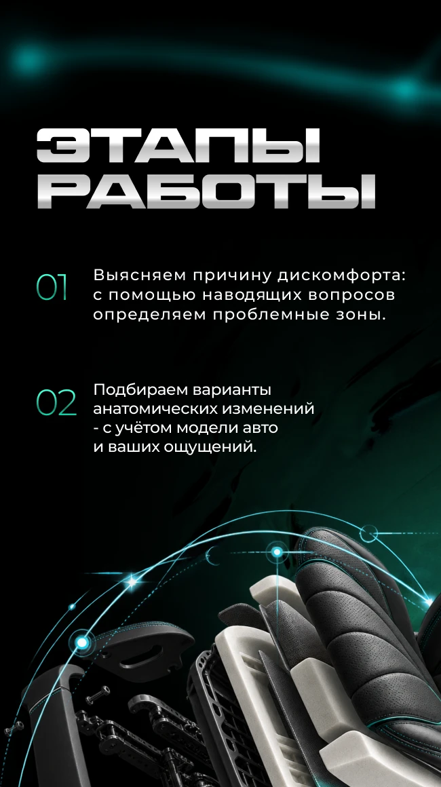
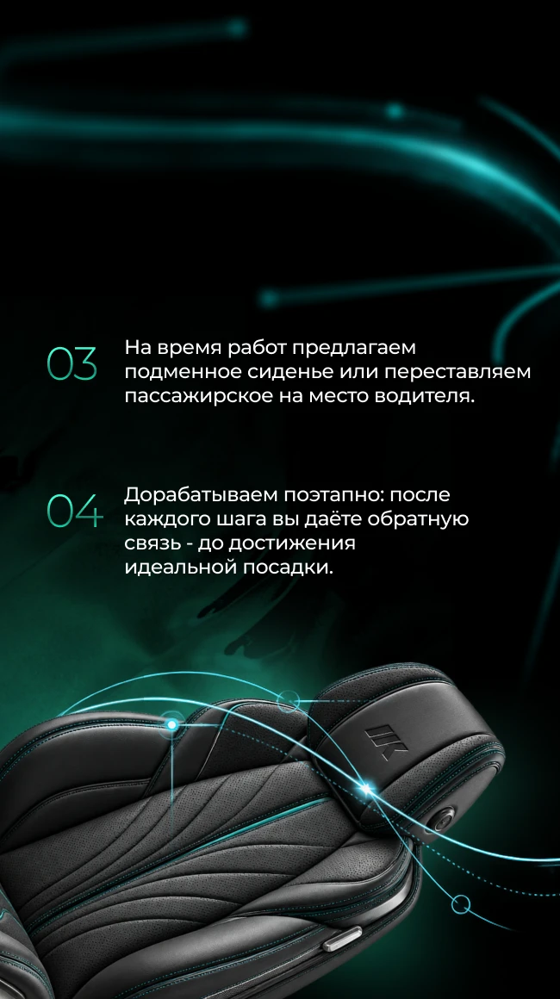

01Challenge
Пользователь должен быстро понять четыре вещи: что именно меняют, зачем это нужно, как проходит работа и какую проблему это решает. Всё — в вертикальной карточке, которую листают с телефона.
ЗадачаОформление визуальной коммуникации ателье для Яндекс Карт
02Context
Почему посадка не подходит
Первая смысловая точка — причина. Карточка про антропометрию объясняет, что многие салоны проектируют под другой рост и комплекцию. Пользователь видит, что дискомфорт — не каприз, а системная проблема.

03Problem
Узнать свою ситуацию
Три типичные жалобы — короткая подушка, давление боковых поддержек, узкий профиль кресла — оформлены как карточки-симптомы с фото реальной работы. Человек узнаёт себя раньше, чем читает про технологию.

04Process
Технология без жаргона
Разобранный рендер кресла показывает, что происходит внутри: разборка, модификация наполнителя, перетяжка. Бирюзовые линии связывают текст с конкретными слоями сиденья.

05Steps
Четыре шага — две карточки
Этапы работы разбиты на две карточки по два шага: крупные тонкие цифры, короткие формулировки и рендер внизу. Ритм серии сохраняется, информация не слипается.


06System
Единый визуальный язык серии: хромированные гротескные заголовки, чёрно-бирюзовая палитра, технические рендеры и световые линии. Каждая карточка решает одну задачу, а вместе они складываются в последовательный рассказ — от боли пользователя к технологии.
ЭлементыТипографика, рендеры, инфографика, акцентные линии, пошаговая структура
07Application
Яндекс Карты и digital-коммуникация: вертикальный формат рассчитан на мобильный просмотр в карточке организации, а каждая карточка читается и отдельно, и как часть серии.
08Value
Сложная услуга объясняется по порядку — без информационной перегрузки.
Серия целиком6 карточек